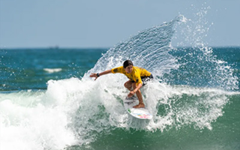
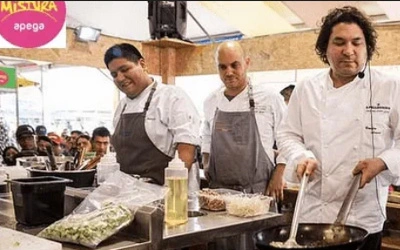
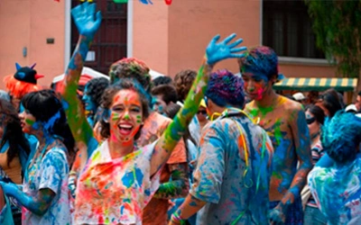
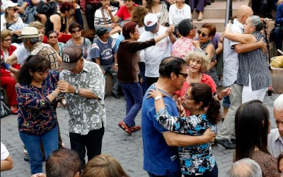

Lima, the capital of Peru, is located on the central coast of the country. Known for its rich culinary heritage and impressive historical heritage, it is a popular tourist destination for food and culture enthusiasts. The city offers a vibrant gastronomic scene that blends Peruvian tradition with international influences. Additionally, it hosts a variety of stunning tourist attractions, such as the Historic Center and other districts filled with art and music. It also boasts beautiful beaches where visitors can relax and enjoy the Pacific sun.
Featured Events
Surf Championship 🏄♂️
The beaches of Lima are chosen for surfing championships due to their consistent and high-quality waves, favorable climatic conditions, and proximity to the city, which offers adequate infrastructure and services. Additionally, the surfing tradition in the region and the international recognition of its beaches contribute to their attractiveness for surfing events.
Mistura Gastronomic Fair 🍴
Mistura is an important gastronomic festival in Lima, Peru, that celebrates the diversity and richness of Peruvian cuisine. It brings together chefs, producers, and artisans from all over the country, offering a wide variety of traditional and contemporary foods and beverages. The event includes culinary demonstrations, a producers' market, and cultural activities, promoting tourism and the local economy.
Barranco Carnival 🎉
The Barranco Carnival in Lima is a traditional and cultural festivity celebrated in the district of Barranco, known for being one of the city's most bohemian and artistic neighborhoods. This carnival is distinguished by its festive atmosphere and its emphasis on music, dance, and artistic expressions. Some activities that take place during the carnival include Parades and Comparsas, Masks and Costumes, Music and Dance, among others.
Dance in Keenedy Park 💃🕺
In recent years, it has become a tradition for senior citizens to gather at Kennedy Park on weekends to dance to their favorite songs. This spontaneous event has created a space for socializing and recreation for older adults, promoting physical activity and emotional well-being. Park visitors, both locals and tourists, enjoy the cheerful atmosphere and often join in the fun.